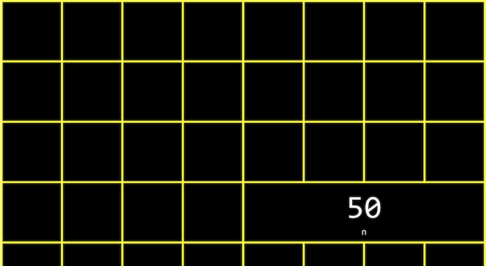
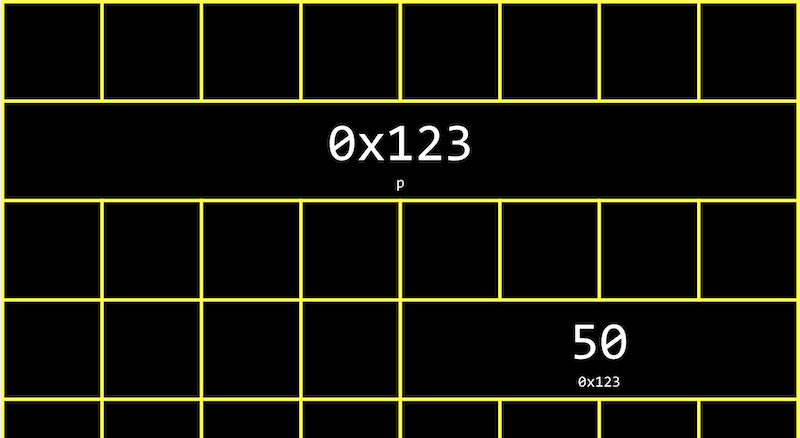
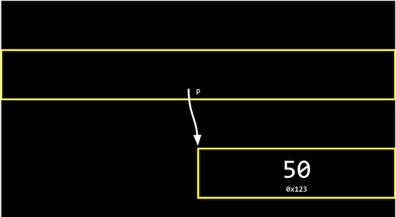
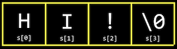
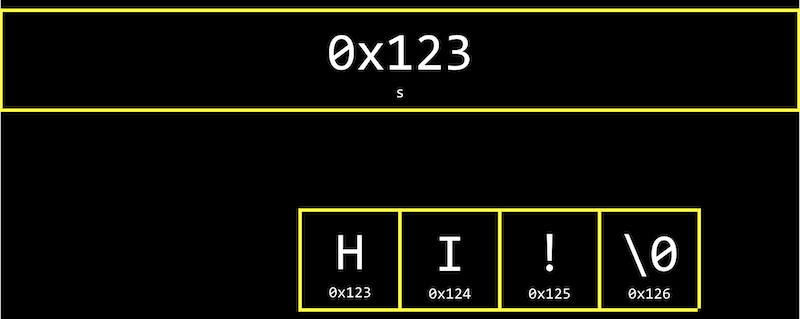
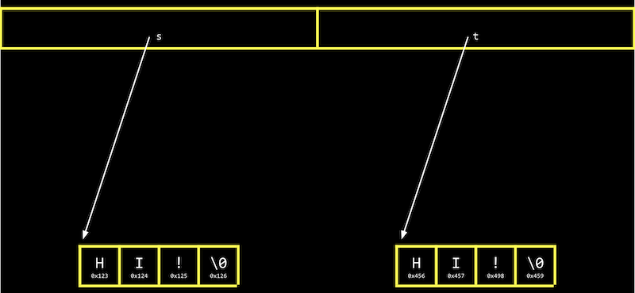
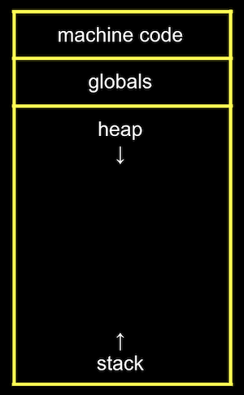
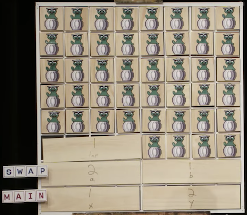
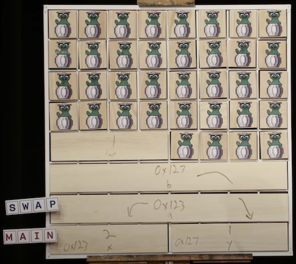

讲座 4
- Hexadecimal
- Addresses
- 指针
- Strings
- Pointer arithmetic
- Compare and copy
- valgrind
- Garbage values
- Swap
- 内存 layout
- scanf
- Files
- Graphics
Hexadecimal
- In 第 2 周, we talked 关于 内存 and how each byte has an address, or identifier, so we can refer to where our data are actually stored.
- It turns out that, by convention, the addresses for 内存 use the counting system hexadecimal, or base-16, where there are 16 digits: 0-9, and A-F as equivalents to 10-15.
- Let’s consider a two-digit hexadecimal number:
16^1 16^0 0 A- Here, the A in the ones place (since 16^0 = 1) has a decimal value of 10. We can keep counting until
0F, which is equivalent to 15 in decimal.
- Here, the A in the ones place (since 16^0 = 1) has a decimal value of 10. We can keep counting until
- After
0F, we need to carry the one, as we would go from 09 to 10 in decimal:16^1 16^0 1 0- Here, the
1has a value of 16^1 * 1 = 16, so10in hexadecimal is 16 in decimal.
- Here, the
- With two digits, we can have a maximum value of
FF, or 16^1 * 15 + 16^0 * 15 = 240 + 15 = 255, which is the same maximum value with 8 bits of binary. So two digits in hexadecimal can conveniently represent the value of a byte in binary. (Each digit in hexadecimal, with 16 values, maps to four bits in binary.) - In writing, we indicate a value is in hexadecimal by prefixing it with
0x, as in0x10, where the value is equal to 16 in decimal, as opposed to 10. - The RGB color system conventionally uses hexadecimal to describe the amount of each color. For 示例,
000000in hexadecimal represents 0 for each of red, green, and blue, for a combined color of black. AndFF0000would be 255, or the highest possible, amount of red.FFFFFFwould indicate the highest value of each color, combining to be the brightest white. With different values for each color, we can represent millions of different colors. - For our computer’s 内存, too, we’ll use hexadecimal for each address or 地点.
Addresses
- We might create a value
n, and print it out:#include <stdio.h> int main(void) { int n = 50; printf("%i\n", n); } - In our computer’s 内存, there are now 4 bytes somewhere that have the binary value of 50, labeled
n:

- It turns out that, with the billions of bytes in 内存, those bytes for the variable
nstarts 在 some 地点, which might look something like0x12345678. - In C, we can actually see the address with the
&operator, which means “get the address of this variable”:#include <stdio.h> int main(void) { int n = 50; printf("%p\n", &n); }%pis the format code for an address.- In the CS50 IDE, we see an address like
0x7ffd80792f7c. The value of the address in itself is not useful, since it’s just some 地点 in 内存 that the variable is stored in; instead, the important idea is that we can use this address later.
- The
*operator, or the dereference operator, lets us “go to” the 地点 that a pointer is pointing to. - For 示例, we can print
*&n, where we “go to” the address ofn, and that will print out the value ofn,50, since that’s the value 在 the address ofn:#include <stdio.h> int main(void) { int n = 50; printf("%i\n", *&n); }
指针
- A variable that stores an address is called a pointer, which we can think of as a value that “points” to a 地点 in 内存. In C, 指针 can refer to specific types of values.
- We can use the
*operator (in an unfortunately confusing way) to declare a variable that we want to be a pointer:#include <stdio.h> int main(void) { int n = 50; int *p = &n; printf("%p\n", p); }- Here, we use
int *pto declare a variable,p, that has the type of*, a pointer, to a value of typeint, an integer. Then, we can print its value (an address, something like0x12345678), or print the value 在 its 地点 withprintf("%i\n", *p);.
- Here, we use
- In our computer’s 内存, the variables will look like this:

- Since
pis a variable itself, it’s somewhere in 内存, and the value stored there is the address ofn. - Modern computer systems are “64-bit”, meaning that they use 64 bits to address 内存, so a pointer will in reality be 8 bytes, twice as big as an integer of 4 bytes.
- Since
- We can abstract away the actual value of the addresses, since they’ll be different as we declare variables in our programs and not very useful, and simply think of
pas “pointing 在” some value:

- In the real 世界, we might have a mailbox labeled “p”, among many mailboxes with addresses. Inside our mailbox, we can put a value like
0x123, which is the address of some other mailboxn, with the address0x123.
Strings
- A variable declared with
string s = "HI!";will be stored one character 在 a 时间 in 内存. And we can access each character withs[0],s[1],s[2], ands[3]:

- But it turns out that each character, since it’s stored in 内存, also has some unique address, and
sis actually just a pointer with the address of the first character:
- And the variable
sstores the address of the first character of the string. The value\0is the only indicator of the 结束 of the string:

- Since the rest of the characters are in an array, 返回-to-返回, we can 开始 在 the address in
sand continue reading one character 在 a 时间 from 内存 until we reach\0.
- Since the rest of the characters are in an array, 返回-to-返回, we can 开始 在 the address in
- Let’s print out a string:
#include <cs50.h> #include <stdio.h> int main(void) { string s = "HI!"; printf("%s\n", s); } - We can see the value stored in
swithprintf("%p\n", s);, and we see something like0x4006a4since we’re printing the address in 内存 of the first character of the string. - If we add another line,
printf("%p\n", &s[1]);, we indeed see the 下一页 address in 内存:0x4006a5. - It turns out that
string sis just a pointer, an address to some character in 内存. - In fact, the CS50 library defines a type that doesn’t exist in C,
string, aschar *, withtypedef char *string;. The custom type,string, is defined as just achar *withtypedef. Sostring s = "HI!"is the same aschar *s = "HI!";. And we can use strings in C in the exact same way without the CS50 library, by usingchar *.
Pointer arithmetic
- Pointer arithmetic is mathematical operations on addresses with 指针.
- We can print out each character in a string (using
char *directly):#include <stdio.h> int main(void) { char *s = "HI!"; printf("%c\n", s[0]); printf("%c\n", s[1]); printf("%c\n", s[2]); } - But we can go to addresses directly:
#include <stdio.h> int main(void) { char *s = "HI!"; printf("%c\n", *s); printf("%c\n", *(s+1)); printf("%c\n", *(s+2)); }*sgoes to the address stored ins, and*(s+1)goes to the 地点 in 内存 with an address one byte higher, or the 下一页 character.s[1]is syntactic sugar for*(s+1), equivalent in function but 更多 human-friendly to 阅读 and write.
- We can even try to go to addresses in 内存 that we shouldn’t, like with
*(s+10000), and when we run our program, we’ll get a segmentation fault, or crash as a result of our program touching 内存 in a segment it shouldn’t have.
Compare and copy
- Let’s try to compare two integers from the user:
#include <cs50.h> #include <stdio.h> int main(void) { int i = get_int("i: "); int j = get_int("j: "); if (i == j) { printf("Same\n"); } else { printf("Different\n"); } }- We compile and run our program, and it works as we’d expect, with the same values of the two integers giving us “Same” and different values “Different”.
- When we try to compare two strings, we see that the same inputs are causing our program to print “Different”:
#include <cs50.h> #include <stdio.h> int main(void) { char *s = get_string("s: "); char *t = get_string("t: "); if (s == t) { printf("Same\n"); } else { printf("Different\n"); } }- Even when our inputs are the same, we see “Different” printed.
- Each “string” is a pointer,
char *, to a different 地点 in 内存, where the first character of each string is stored. So even if the characters in the string are the same, this will always print “Different”.
- For 示例, our first string might be 在 address 0x123, our second might be 在 0x456, and
swill have the value of0x123, pointing 在 that 地点, andtwill have the value of0x456, pointing 在 another 地点:

- And
get_string, this whole 时间, has been returning just achar *, or a pointer to the first character of a string from the user. Since we calledget_stringtwice, we got two different 指针 返回. - Let’s try to copy a string:
#include <cs50.h> #include <ctype.h> #include <stdio.h> int main(void) { char *s = get_string("s: "); char *t = s; t[0] = toupper(t[0]); printf("s: %s\n", s); printf("t: %s\n", t); }- We get a string
s, and copy the value ofsintot. Then, we capitalize the first letter int. - But when we run our program, we see that both
sandtare now capitalized. - Since we set
sandtto the same value, or the same address, they’re both pointing to the same character, and so we capitalized the same character in 内存!
- We get a string
- To actually make a copy of a string, we have to do a little 更多 work, and copy each character in
sto somewhere else in 内存:#include <cs50.h> #include <ctype.h> #include <stdio.h> #include <stdlib.h> #include <string.h> int main(void) { char *s = get_string("s: "); char *t = malloc(strlen(s) + 1); for (int i = 0, n = strlen(s); i < n + 1; i++) { t[i] = s[i]; } t[0] = toupper(t[0]); printf("s: %s\n", s); printf("t: %s\n", t); }- We create a 新内容 variable,
t, of the typechar *, withchar *t. Now, we want to point it to a 新内容 chunk of 内存 that’s large enough to store the copy of the string. Withmalloc, we allocate some number of bytes in 内存 (that aren’t already used to store other values), and we pass in the number of bytes we’d like to mark for use. We already know the length ofs, and we add 1 to that for the terminating null character. So, our final line of code ischar *t = malloc(strlen(s) + 1);. - Then, we copy each character, one 在 a 时间, with a
forloop. We usei < n + 1, since we actually want to go up ton, the length of the string, to ensure we copy the terminating character in the string. In the loop, we sett[i] = s[i], copying the characters. While we could use*(t+i) = *(s+i)to the same effect, it’s arguably 较少 readable. - Now, we can capitalize just the first letter of
t.
- We create a 新内容 variable,
- We can add some error-checking to our program:
#include <cs50.h> #include <ctype.h> #include <stdio.h> #include <stdlib.h> #include <string.h> int main(void) { char *s = get_string("s: "); char *t = malloc(strlen(s) + 1); if (t == NULL) { return 1; } for (int i = 0, n = strlen(s); i < n + 1; i++) { t[i] = s[i]; } if (strlen(t) > 0) { t[0] = toupper(t[0]); } printf("s: %s\n", s); printf("t: %s\n", t); free(t); }- If our computer is out of 内存,
mallocwill returnNULL, the null pointer, or a special value that indicates there isn’t an address to point to. So we should check for that case, and exit iftisNULL. - We could also check that
thas a length, before trying to capitalize the first character. - Finally, we should free the 内存 we allocated earlier, which marks it as usable again by some other program. We call the
freefunction and pass in the pointert, since we’re done with that chunk of 内存. (get_string, too, callsmallocto allocate 内存 for strings, and callsfreejust before themainfunction returns.)
- If our computer is out of 内存,
- We can actually also use the
strcpyfunction, from the C’s string library, withstrcpy(t, s);instead of our loop, to copy the stringsintot.
valgrind
valgrindis a command-line 工具 that we can use to run our program and see if it has any 内存 leaks, or 内存 we’ve allocated without freeing, which might eventually cause out computer to run out of 内存.- Let’s build a string but allocate 较少 than what we need in
memory.c:#include <stdio.h> #include <stdlib.h> int main(void) { char *s = malloc(3); s[0] = 'H'; s[1] = 'I'; s[2] = '!'; s[3] = '\0'; printf("%s\n", s); }- We also don’t free the 内存 we’ve allocated.
- We’ll run
valgrind ./memoryafter compiling, and we’ll see a lot of output, but we can runhelp50 valgrind ./memoryto help explain some of those messages. For this program, we see snippets like “Invalid write of size 1”, “Invalid 阅读 of size 1”, and finally “3 bytes in 1 blocks are definitely lost”, with line numbers nearby. Indeed, we’re writing to 内存,s[3], which is not part of what we originally allocated fors. And when we print outs, we’re reading all the way tos[3]as well. And finally,sisn’t freed 在 the 结束 of our program.
- We can make sure to allocate the right number of bytes, and free 内存 在 the 结束:
#include <stdio.h> #include <stdlib.h> int main(void) { char *s = malloc(4); s[0] = 'H'; s[1] = 'I'; s[2] = '!'; s[3] = '\0'; printf("%s\n", s); free(s); }- Now,
valgrinddoesn’t show any warning messages.
- Now,
Garbage values
- Let’s take a look 在 the following:
int main(void) { int *x; int *y; x = malloc(sizeof(int)); *x = 42; *y = 13; y = x; *y = 13; }- We declare two 指针 to integers,
xandy, but don’t assign them values. We usemallocto allocate enough 内存 for an integer withsizeof(int), and store it inx.*x = 42goes to the addressxpoints to, and sets that 地点 in 内存 to the value 42. - With
*y = 13, we’re trying to put the value 13 在 the addressypoints to. But since we never assignedya value, it has a garbage value, or whatever unknown value that was in 内存, from whatever program was running in our computer before. So when we try to go to the garbage value inyas an address, we’re going to some unknown address, which is likely to cause a segmentation fault, or segfault.
- We declare two 指针 to integers,
- We 观看 Pointer Fun with Binky, an animated 视频 demonstrating the concepts in the code above.
- We can print out garbage values, by declaring an array but not setting any of its values:
#include <stdio.h> int main(void) { int scores[3]; for (int i = 0; i < 3; i++) { printf("%i\n", scores[i]); } }- When we compile and run this program, we see various values printed.
Swap
- Let’s try to swap the values of two integers.
#include <stdio.h> void swap(int a, int b); int main(void) { int x = 1; int y = 2; printf("x is %i, y is %i\n", x, y); swap(x, y); printf("x is %i, y is %i\n", x, y); } void swap(int a, int b) { int tmp = a; a = b; b = tmp; }- In the real 世界, if we had a red liquid in one glass, and a blue liquid in another, and we wanted to swap them, we would need a third glass to temporarily hold one of the liquids, perhaps the red glass. Then we can pour the blue liquid into the first glass, and finally the red liquid from the temporary glass into the second one.
- In our
swapfunction, we have a third variable to use as temporary storage space as well. We putaintotmp, and then setato the value ofb, and finallybcan be changed to the original value ofa, now intmp.
- But, if we tried to use that function in a program, we don’t see any changes. It turns out that the
swapfunction gets its own variables,aandbwhen they are passed in, that are copies ofxandy, and so changing those values don’t changexandyin themainfunction.
内存 layout
- Within our computer’s 内存, the different types of data that need to be stored for our program are organized into different 小组课:

- The machine code 小组课 is our compiled program’s binary code. When we run our program, that code is loaded into the “top” of 内存.
- Just below, or in the 下一页 part of 内存, are global variables we declare in our program.
- The heap 小组课 is an empty area from where
malloccan get free 内存 for our program to use. As we callmalloc, we 开始 allocating 内存 from the top down. - The stack 小组课 is used by functions in our program as they are called, and grows upwards. For 示例, our
mainfunction is 在 the very bottom of the stack and has the local variablesxandy. Theswapfunction, when it’s called, has its own area of 内存 that’s on top ofmain’s, with the local variablesa,b, andtmp:

- Once the function
swapreturns, the 内存 it was using is freed for the 下一页 function call.xandyare arguments, so they’re copied asaandbforswap, so we don’t see our changes 返回 inmain. - By passing in the address of
xandy, ourswapfunction can actually work:#include <stdio.h> void swap(int *a, int *b); int main(void) { int x = 1; int y = 2; printf("x is %i, y is %i\n", x, y); swap(&x, &y); printf("x is %i, y is %i\n", x, y); } void swap(int *a, int *b) { int tmp = *a; *a = *b; *b = tmp; }- The addresses of
xandyare passed in frommaintoswapwith&xand&y, and we use theint *asyntax to declare that ourswapfunction takes in 指针. We save the value ofxtotmpby following the pointera, and then take the value ofyby following the pointerb, and store that to the 地点ais pointing to (x). Finally, we store the value oftmpto the 地点 pointed to byb(y), and we’re done:

- The addresses of
- If we call
mallocfor too much 内存, we will have a heap overflow, since we 结束 up going past our heap. Or, if we call too many functions without returning from them, we will have a stack overflow, where our stack has too much 内存 allocated as well. - Let’s implement drawing 马里奥’s pyramid, by calling a function:
#include <cs50.h> #include <stdio.h> void draw(int h); int main(void) { int height = get_int("Height: "); draw(height); } void draw(int h) { for (int i = 1; i <= h; i++) { for (int j = 1; j <= i; j++) { printf("#"); } printf("\n"); } } - We can change
drawto be recursive:void draw(int h) { draw(h - 1); for (int i = 0; i < h; i++) { printf("#"); } printf("\n"); }- When we try to compile this with
make, we see a warning that thedrawfunction will call itself recursively without stopping. So we’ll useclangwithout the extra checks, and when we run this program, we get a segmentation fault right away.drawis calling itself over and over, and we ran out of 内存 on the stack.
- When we try to compile this with
- By adding a base case, the
drawfunction will stop calling itself 在 some point:void draw(int h) { if (h == 0) { return; } draw(h - 1); for (int i = 0; i < h; i++) { printf("#"); } printf("\n"); }- But if we enter a large enough value for the height, like
2000000000, we’ll still run out of 内存, since we’re callingdrawtoo many times without returning.
- But if we enter a large enough value for the height, like
- A buffer overflow occurs when we go past the 结束 of a buffer, some chunk of 内存 we’ve allocated like an array, and access 内存 we shouldn’t be.
scanf
- We can implement
get_intourselves with a C library function,scanf:#include <stdio.h> int main(void) { int x; printf("x: "); scanf("%i", &x); printf("x: %i\n", x); }scanftakes a format,%i, so the input is “scanned” for that format. We also pass in the address in 内存 where we want that input to go. Butscanfdoesn’t have much error checking, so we might not get an integer.
- We can try to get a string the same way:
#include <stdio.h> int main(void) { char *s; printf("s: "); scanf("%s", s); printf("s: %s\n", s); }- But we haven’t actually allocated any 内存 for
s, so we need to callmallocto allocate 内存 for characters for our string. We could also usechar s[4];to declare an array of four characters. Then,swill be treated as a pointer to the first character inscanfandprintf. - Now, if the user types in a string of length 3 or 较少, our program will work safely. But if the user types in a longer string,
scanfmight be trying to write past the 结束 of our array into unknown 内存, causing our program to crash. get_stringfrom the CS50 library continuously allocates 更多 内存 asscanfreads in 更多 characters, so it doesn’t have that issue.
- But we haven’t actually allocated any 内存 for
Files
- With the ability to use 指针, we can also 打开 files, like a digital 电话 book:
#include <cs50.h> #include <stdio.h> #include <string.h> int main(void) { FILE *file = fopen("phonebook.csv", "a"); if (file == NULL) { return 1; } char *name = get_string("Name: "); char *number = get_string("Number: "); fprintf(file, "%s,%s\n", name, number); fclose(file); }fopenis a 新内容 function we can use to 打开 a file. It will return a pointer to a 新内容 type,FILE, that we can 阅读 from and write to. The first argument is the 姓名 of the file, and the second argument is the mode we want to 打开 the file in (rfor 阅读,wfor write, andafor append, or adding to).- We’ll add a check to exit if we couldn’t 打开 the file for some reason.
- After we get some strings, we can use
fprintfto print to a file. - Finally, we 关闭 the file with
fclose.
- Now we can create our own CSV files, a file of comma-separated values (like a mini-spreadsheet), programmatically.
Graphics
- We can 阅读 in binary and map them to pixels and colors, to display images and 视频. With a finite number of bits in an image file, though, we can only Zoom in so far before we 开始 seeing individual pixels.
- With 人工智能 and 机器学习, however, we can use 算法 that can generate additional details that weren’t there before, by guessing based on other data.
- Let’s look 在 a program that opens a file and tells us if it’s a JPEG file, an image file in a particular format:
#include <stdint.h> #include <stdio.h> typedef uint8_t BYTE; int main(int argc, char *argv[]) { // Check usage if (argc != 2) { return 1; } // Open file FILE *file = fopen(argv[1], "r"); if (!file) { return 1; } // Read first three bytes BYTE bytes[3]; fread(bytes, sizeof(BYTE), 3, file); // Check first three bytes if (bytes[0] == 0xff && bytes[1] == 0xd8 && bytes[2] == 0xff) { printf("Maybe\n"); } else { printf("No\n"); } // Close file fclose(file); }- First, we define a
BYTEas 8 bits, so we can refer to a byte as a type 更多 easily in C. - Then, we try to 打开 a file (checking that we indeed get a non-NULL file 返回), and 阅读 the first three bytes from the file with
fread, into a buffer calledbytes. - We can compare the first three bytes (in hexadecimal) to the three bytes 必需 to begin a JPEG file. If they’re the same, then our file is likely to be a JPEG file (though, other types of files 五月 still begin with those bytes). But if they’re not the same, we know it’s definitely not a JPEG file.
- First, we define a
- We can even copy files ourselves, one byte 在 a 时间 now:
#include <stdint.h> #include <stdio.h> #include <stdlib.h> typedef uint8_t BYTE; int main(int argc, char *argv[]) { // Ensure proper usage if (argc != 3) { fprintf(stderr, "Usage: copy SOURCE DESTINATION\n"); return 1; } // open input file FILE *source = fopen(argv[1], "r"); if (source == NULL) { printf("Could not open %s.\n", argv[1]); return 1; } // Open output file FILE *destination = fopen(argv[2], "w"); if (destination == NULL) { fclose(source); printf("Could not create %s.\n", argv[2]); return 1; } // Copy source to destination, one BYTE at a time BYTE buffer; while (fread(&buffer, sizeof(BYTE), 1, source)) { fwrite(&buffer, sizeof(BYTE), 1, destination); } // Close files fclose(source); fclose(destination); return 0; }- We use
argvto get arguments, using them as filenames to 打开 files to 阅读 from and one to write to. - Then, we 阅读 one byte from the
sourcefile into a buffer, and write that byte to thedestinationfile. We can use awhileloop to callfread, which will stop once there are no 更多 bytes to 阅读.
- We use
- We can use these abilities to 阅读 and write files, recovering images from a file, and adding filters to images by changing the bytes in them, in this 周’s 问题集!